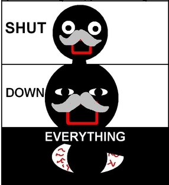

<html>
	<head>
		<link rel="stylesheet" href="flipclock-compiled/flipclock.css">

		<script src="http://ajax.googleapis.com/ajax/libs/jquery/1.10.2/jquery.min.js"></script>

		<script src="flipclock-compiled/flipclock.js"></script>	
	</head>
	<body>
		<div class="clock" style="margin:2em;"></div>
		
		<script type="text/javascript">
			var clock;
			$(document).ready(function() {
				// Grab the current date
				var currentDate = new Date();
				// Jul 1, 2016
				var futureDate  = new Date(2016, 6, 1);
				// Calculate the difference in seconds between the future and current date
				var diff = futureDate.getTime() / 1000 - currentDate.getTime() / 1000;
				// Instantiate a coutdown FlipClock
				clock = $('.clock').FlipClock(diff, {
					clockFace: 'DailyCounter',
					countdown: true
				});
			});
		</script>
		
	</body>

	<p>
</html>
